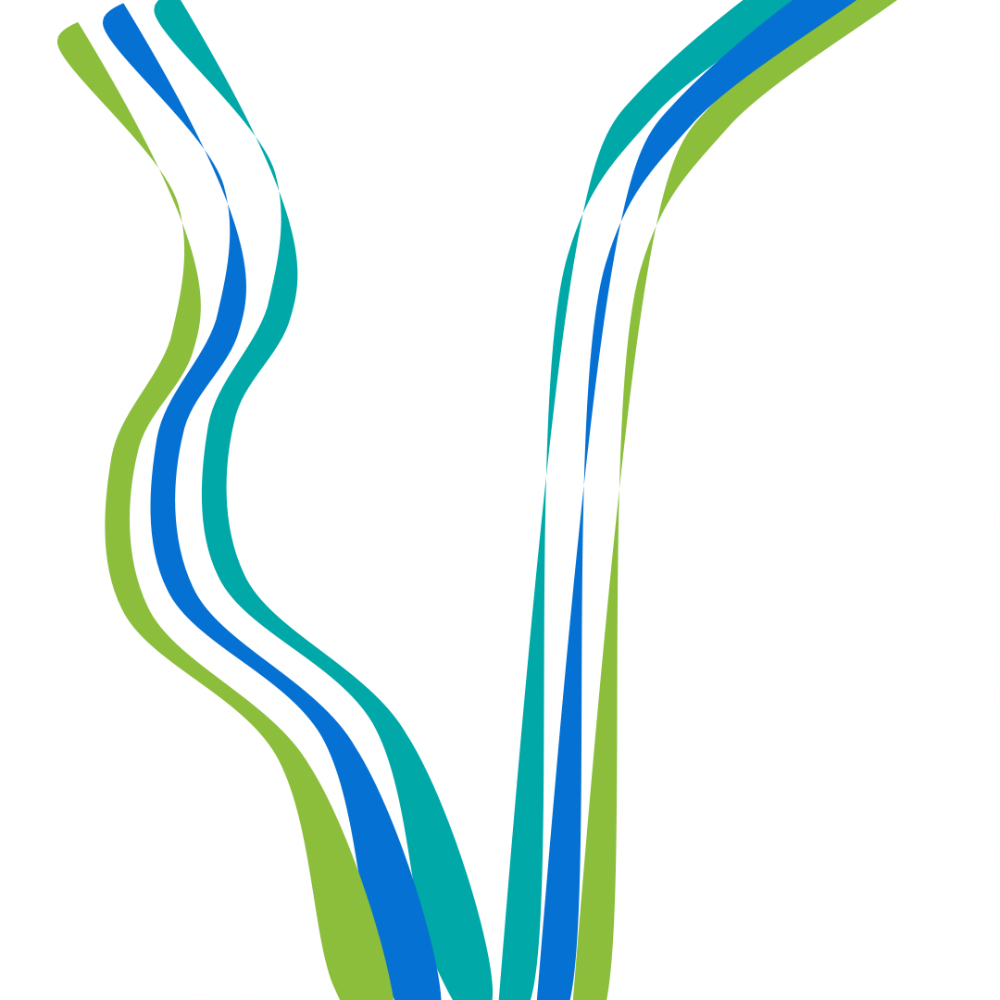

Médiation interculturelle
Logistique à fort enjeu et Coordination de terrain
Présentation
Coordination de terrain pour des partenaires B2B internationaux en région lyonnaise.
Axes d'intervention
- Médiation culturelle
- Liaison opérationnelle
- Résolution de problèmes
- Expérience utilisateur